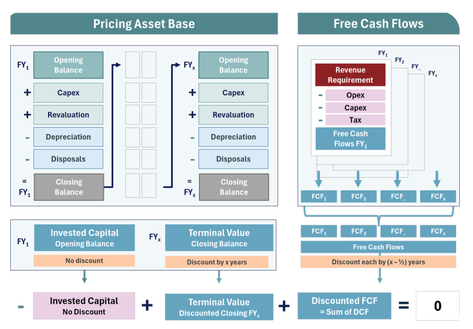

Pricing, forecasting and capacity work for airports and ports.
Projects for CSV clients are marked as consulting. Work done while employed by an airport is marked with the role.
ClientDunedin AirportTypeConsultingServicePricing and financial modelling
A transparent aeronautical pricing model
Built a robust and transparent aeronautical pricing model aligned with Commerce Commission guidelines. The model kept charges fair for airlines while supporting the airport's financial sustainability.
It was designed to be used: clearer inputs, improved usability, and scenario analysis so the airport can test options for future planning.

How the model sets prices: the asset base and free cash flows are discounted so the return exactly covers the cost of capital.
OrganisationQueenstown AirportRoleHead of Aeronautical, 2021 to 2024ServiceForecasting, capacity, pricing
Running the aeronautical side of a constrained airport
Long-term passenger forecasting for planning and pricing.
Introducing Level 3 slot coordination, so demand at peak times fits the airport's capacity.
Managing regulated airport pricing under the Commerce Commission's framework.
Developing an internal noise model to track aircraft noise against the airport's limits.
Preparing information disclosure accounts for the regulator.
ClientMilford Sound PortTypeConsultingServiceCapacity and scheduling
A fair scheduling system for a busy port
The project developed an efficient and fair scheduling system for Milford Sound Port, to manage increasing demand while keeping operations safe and effective.
Through data analysis and stakeholder consultation, a structured scheduling framework was created: defined parameters, a baseline schedule and scheduling rules.
The final system makes better use of resources, aligns boat movements with port capacity, and reduces delays and operational risk.
ClientsAirports and airlinesTypeConsulting, under NDA
Work that can't be named
Business development for new routes
Regional analysis
Airline incentive models
Happy to talk through the approach in more detail on a call.
Have a similar decision coming up?
Tell me the question and the deadline. I'll reply with how I'd approach it.